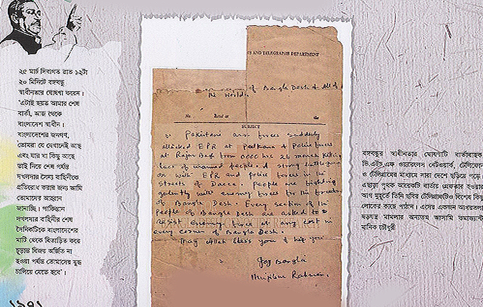

ফোন: ২৪২৫৬১
৬৭৭ ধানমন্ডি আবাসিক এলাকা
রোড নং ৩২, ঢাকা।
তারিখ: ১৭-১১-৬৯ ইং
জনাব অধ্যাপক সাহেব,
আমার ছালাম গ্রহণ করবেন। আশা করি ছহি-ছলামতে আছেন।
সম্প্রতি ইত্তেফাকে প্রকাশিত আপনার প্রবন্ধ ‘শক্ত কেন্দ্র কেন ও কার জন্য’ পড়ে মুগ্ধ হয়েছি। আপনার সাবলীল লেখনী নিঃসৃত সৃজনশীল এই প্রবন্ধটি পুস্তিকা আকারে প্রকাশ করে অধিক সংখ্যক মানুষের দ্বারপ্রান্তে পৌঁছে দিতে হবে বলে আমার স্থির বিশ্বাস। প্রবন্ধটি আমি পুস্তিকা আকারে প্রকাশ করতে মনস্থ করেছি। আপনার অনুমতি পেলে কৃতার্থ হব।
আপনার স্নেহের
শেখ মুজিব